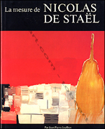
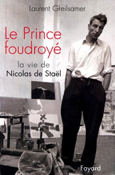
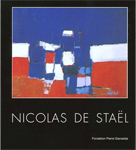

Bibliographie
Nicolas de Staël, Catalogue raisonné de l'oeuvre peint
de Françoise de Staël
Ed. Ides et Calendes
Album / 1280 pages / format 24 x 30 / illustrations / relié couverture illustrée
Dans cet ouvrage, vous trouverez l'intégralité de l'oeuvre peint de Nicolas de Staël dans un ouvrage très richement illustré, réalisé par Françoise de Staël.
La mesure de Nicolas de Staël
de Jean-Pierre Jouffroy
Ed. Ides et Calendes
Album / 240 pages / format 25 x 32 / 127 illustrations / relié couverture illustrée
Le prince Foudroye, La vie De Nicolas de Staël
de Laurent Greilsamer
Ed. Fayard
Document / 335 pages / format 18 x 23 / illustrations / broché couverture illustrée
Nicolas de Staël, L'aventure en peinture
de Arno Mansar
Ed. La Renaissance du Livre

Document / 236 pages / format 18 x 24 / illustrations / broché couverture illustrée
Nicolas de Staël
de Jean Louis Prat
Ed. Fondation Pierre Gianada
Catalogue / 232 pages / format 22 x 24 / illustrations / relié couverture illustrée